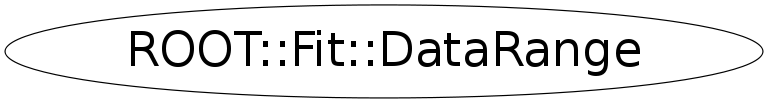

class ROOT::Fit::DataRange
class describing the range in the coordinates it supports multiple range in a coordinate. The rnage dimension is the dimension of the coordinate, its size is the number of interval for each coordinate. Default range is -inf, inf Range can be modified with the add range method @ingroup FitData
Function Members (Methods)
public:
| ~DataRange() | |
| void | AddRange(double xmin, double xmax) |
| void | AddRange(unsigned int icoord, double xmin, double xmax) |
| void | AddRange(double xmin, double xmax, double ymin, double ymax) |
| void | AddRange(double xmin, double xmax, double ymin, double ymax, double zmin, double zmax) |
| void | Clear(unsigned int icoord = 0) |
| ROOT::Fit::DataRange | DataRange(unsigned int dim = 1) |
| ROOT::Fit::DataRange | DataRange(const ROOT::Fit::DataRange&) |
| ROOT::Fit::DataRange | DataRange(double xmin, double xmax) |
| ROOT::Fit::DataRange | DataRange(double xmin, double xmax, double ymin, double ymax) |
| ROOT::Fit::DataRange | DataRange(double xmin, double xmax, double ymin, double ymax, double zmin, double zmax) |
| void | GetRange(double& xmin, double& xmax) const |
| void | GetRange(double* xmin, double* xmax) const |
| void | GetRange(unsigned int icoord, double& xmin, double& xmax) const |
| void | GetRange(double& xmin, double& xmax, double& ymin, double& ymax) const |
| void | GetRange(double& xmin, double& xmax, double& ymin, double& ymax, double& zmin, double& zmax) const |
| bool | IsInside(double x, unsigned int icoord = 0) const |
| bool | IsSet() const |
| unsigned int | NDim() const |
| pair<double,double> | operator()(unsigned int icoord = 0, unsigned int irange = 0) const |
| ROOT::Fit::DataRange& | operator=(const ROOT::Fit::DataRange&) |
| const ROOT::Fit::DataRange::RangeSet& | Ranges(unsigned int icoord = 0) const |
| void | SetRange(double xmin, double xmax) |
| void | SetRange(unsigned int icoord, double xmin, double xmax) |
| void | SetRange(double xmin, double xmax, double ymin, double ymax) |
| void | SetRange(double xmin, double xmax, double ymin, double ymax, double zmin, double zmax) |
| unsigned int | Size(unsigned int icoord = 0) const |
protected:
| void | CleanRangeSet(unsigned int icoord, double xmin, double xmax) |
| static void | GetInfRange(double& x1, double& x2) |
Class Charts
{kind=link}
{kind=link}
{kind=link}
{kind=link}

Function documentation
DataRange(double xmin, double xmax, double ymin, double ymax)
construct a range for [xmin, xmax] , [ymin, ymax]
DataRange(double xmin, double xmax, double ymin, double ymax, double zmin, double zmax)
construct a range for [xmin, xmax] , [ymin, ymax] , [zmin, zmax]
unsigned int Size(unsigned int icoord = 0) const
return range size for coordinate icoord (starts from zero)
Size == 0 indicates no range is present [-inf, + inf]
bool IsSet() const
return true if a range has been set in any of the coordinates
i.e. when it is not [-inf,+inf] for all coordinates
Avoid in case of multi-dim to loop on all the coordinated and ask the size
const RangeSet & Ranges(unsigned int icoord = 0) const
return the vector of ranges for the coordinate icoord
std::pair<double, double> operator()(unsigned int icoord = 0, unsigned int irange = 0) const
return the i-th range for the coordinate icoord.
Useful method when only one range is present for the given coordinate
void GetRange(unsigned int icoord, double& xmin, double& xmax) const
get the first range for given coordinate. If range does not exist
return -inf, +inf
void GetRange(double& xmin, double& xmax) const
get first range for the x - coordinate
{ GetRange(0,xmin,xmax); }void GetRange(double& xmin, double& xmax, double& ymin, double& ymax) const
get first range for the x and y coordinates
GetRange(0,xmin,xmax)
void GetRange(double& xmin, double& xmax, double& ymin, double& ymax, double& zmin, double& zmax) const
get first range for the x and y and z coordinates
void AddRange(unsigned int icoord, double xmin, double xmax)
add a range [xmin,xmax] for the new coordinate icoord
Adding a range does not delete existing one, but takes the OR with
existing ranges.
if want to replace range use method SetRange, which replace range with existing one
void AddRange(double xmin, double xmax)
add a range [xmin,xmax] for the first coordinate icoord
{ AddRange(0,xmin,xmax); }void AddRange(double xmin, double xmax, double ymin, double ymax)
add a range [xmin,xmax] for the first and [ymin,ymax] for the second coordinate
void AddRange(double xmin, double xmax, double ymin, double ymax, double zmin, double zmax)
add a range [xmin,xmax] for the first and [ymin,ymax] for the second coordinate and
[zmin,zmax] for the third coordinate
void SetRange(unsigned int icoord, double xmin, double xmax)
set a range [xmin,xmax] for the new coordinate icoord
If more range exists for other coordinates, delete the existing one and use it the new one
Use Add range if want to keep the union of the existing ranges
void SetRange(double xmin, double xmax)
set a range [xmin,xmax] for the first coordinate icoord
{ SetRange(0,xmin,xmax); }void SetRange(double xmin, double xmax, double ymin, double ymax)
set a range [xmin,xmax] for the first and [ymin,ymax] for the second coordinate
void SetRange(double xmin, double xmax, double ymin, double ymax, double zmin, double zmax)
set a range [xmin,xmax] for the first and [ymin,ymax] for the second coordinate and
[zmin,zmax] for the third coordinate
bool IsInside(double x, unsigned int icoord = 0) const
check if a point is inside the range for the given coordinate
void CleanRangeSet(unsigned int icoord, double xmin, double xmax)
internal function to remove all the existing ranges between xmin and xmax
called when a new range is inserted